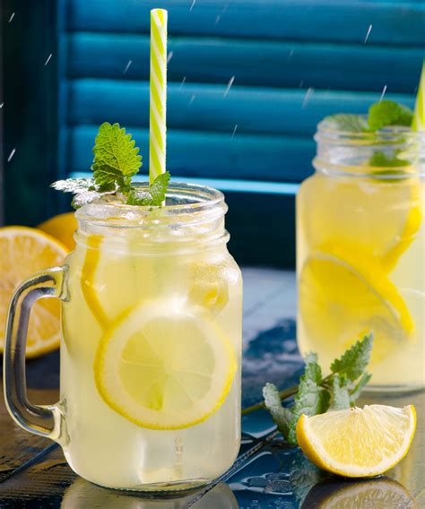

honeywater

why honeywater?
served warm or cold, honeywater is a delicious blend of natural and inexpensive ingredients that soothe your stomach and energize your mind and body without caffeine or other unwanted substances.
ingredients
- 1 half gallon water
- 4 tbsp honey
- 1 tbsp coarse salt
optional
- 1" ginger root
- sprig mint or basil
- 2 lemon wedges
equipment
- kettle
- heatsafe glass pitcher
steps
- start water to boil in kettle
- add salt to bottom of pitcher
- pour honey over salt
- (opt) squeeze lemons in pitcher, and throw squeezed wedges in as well
- toss in ginger and herbs directly in pitcher or in diffuser
- when water comes to boil, pour over mixture in pitcher
- stir for one minute